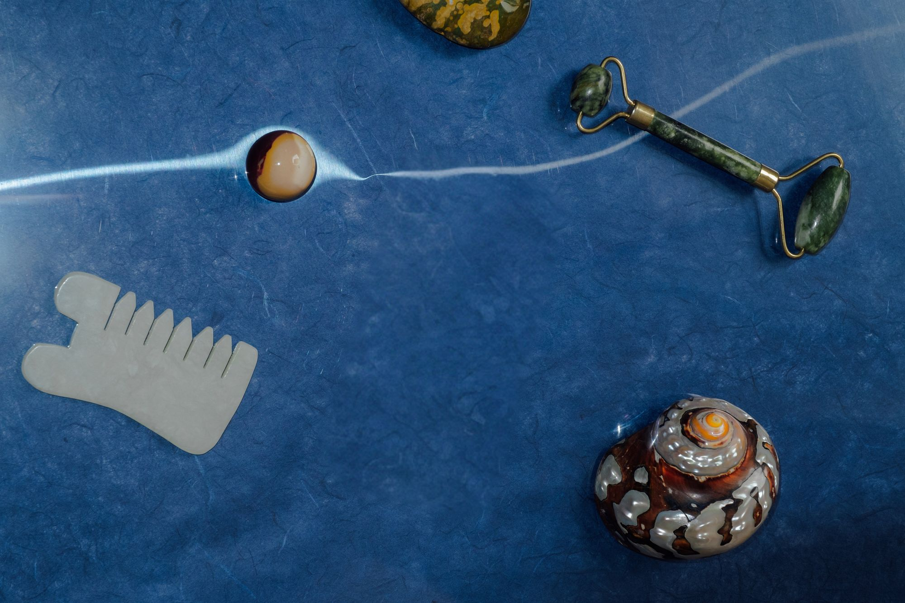
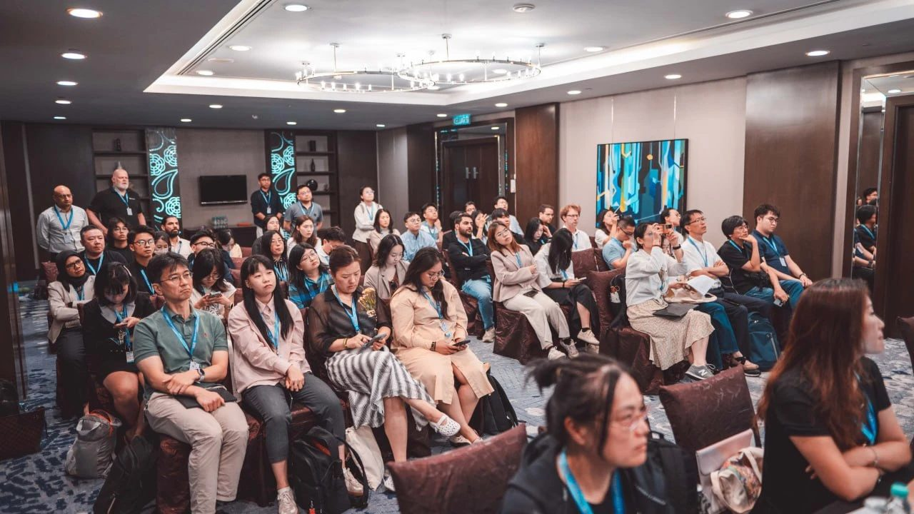
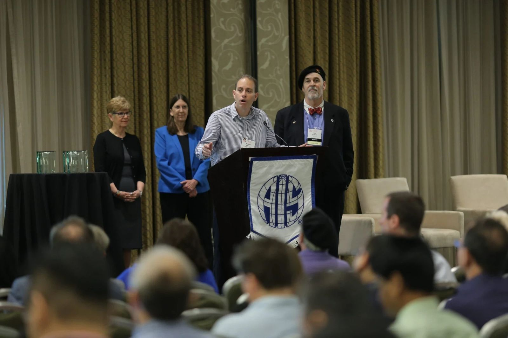
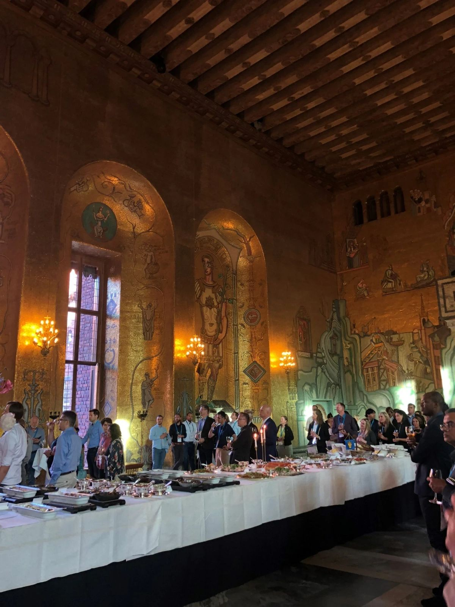
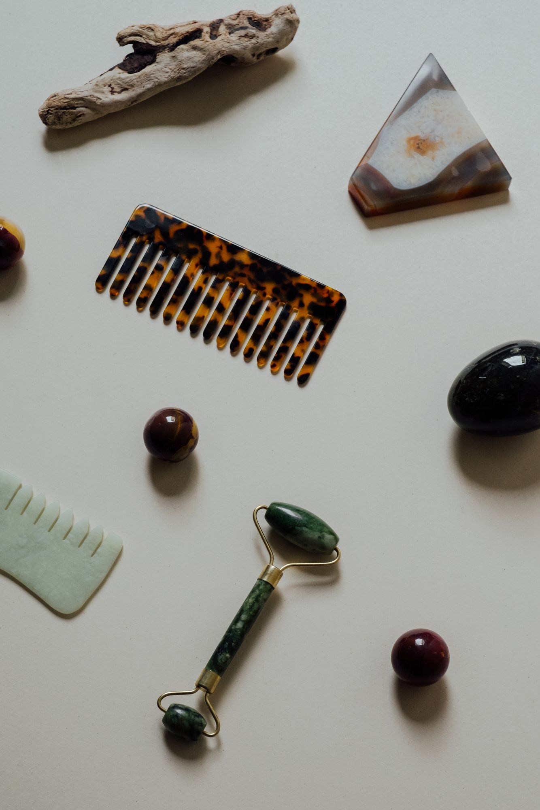

Student Chapter · Naveen Jindal School of Management
Association for Information Systems
Where UT Dallas students learn the tools, meet the people, and build the experience behind a career in technology.
Welcome to AIS
We promote the study and practice of information systems through professional development, technical workshops, and a community of students who like figuring out how technology and business fit together.

- Part of
- Global AIS
- Alumni
- 10,000+
- Open to
- All majors
What we do
Learn. Connect. Build. Compete.
- Professional developmentRésumé reviews, mock interviews, and career prep aimed at IS, analytics, and consulting roles.
- Technical workshopsHands-on sessions in SQL, Python, cloud, data visualisation, and the tools employers actually use.
- Industry speakersTalks and panels with professionals from the companies that hire UT Dallas students.
- Case competitionsReal business problems, tight deadlines, and a chance to present to judges from industry.
Upcoming Events
Full calendar

Compete on a national stage
As a chapter of the global Association for Information Systems, our members can take part in the AIS Student Chapter Leadership Conference, where teams from universities across the country go head to head in case and technology competitions.
It’s the best way to test what you’ve learned against the strongest IS students in the country, and to come home with connections that last well beyond the weekend.
About AIS nationalMoments from the AIS community

Awards & recognition
Socials & receptions Celebrating milestones
Celebrating milestones
 Speaker series
Speaker series
Event photos: AIS IS History photo gallery
Meet the Officers
The student team that plans every workshop, speaker, and social. Reach out to any of us.
 Chinmayi MaddaliBusiness Analytics and AI, JuniorPresident
Chinmayi MaddaliBusiness Analytics and AI, JuniorPresident Avi PandyaFinance and CIS Tech, JuniorVice President
Avi PandyaFinance and CIS Tech, JuniorVice President- Myiesha PanjwaniFinance, JuniorVP of Operations
- Aaron SenFinance, JuniorTreasurer
- Officer NameDirector of Professional Development
- Officer NameDirector of Marketing
10,000+
An alumni network that opens doors
AIS members go on to build careers at the world’s leading banks, tech companies, and consultancies, and many come back to mentor, speak, and recruit the next class.
Where AIS alumni work
- Goldman Sachs
- JPMorgan Chase
- Microsoft
- Amazon
- Deloitte
- Accenture
- EY
- PwC
- KPMG
- Bank of America
- Capital One
- Goldman Sachs
- JPMorgan Chase
- Microsoft
- Amazon
- Deloitte
- Accenture
- EY
- PwC
- KPMG
- Bank of America
- Capital One

Join the chapter
Membership is open to every UT Dallas student, whatever your major. Want to partner with us, or just have a question? Use the same form.
- Priority access to workshops and company events
- Eligibility for AIS national case competitions
- A 10,000+ strong alumni network to learn from
- Résumé book shared with our industry partners
- A community of students heading the same way
- Find us
- Jindal School of Management
800 W Campbell Rd, Richardson, TX